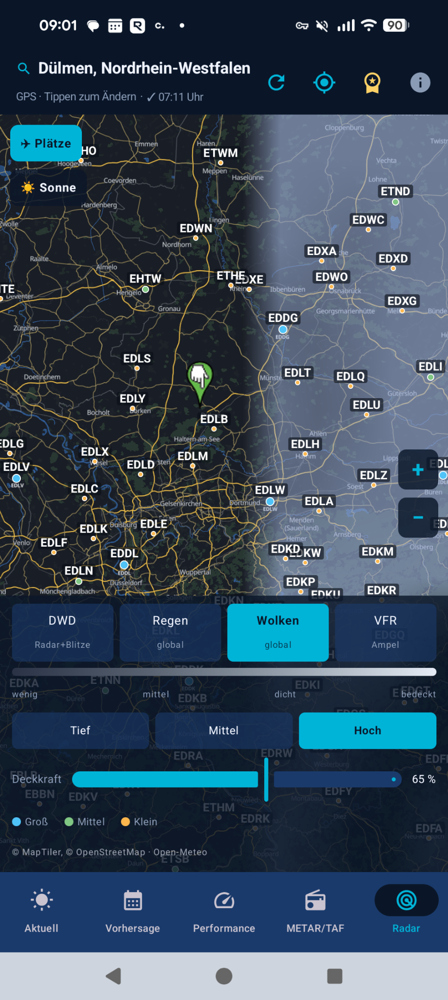
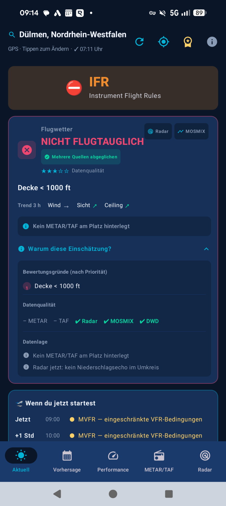
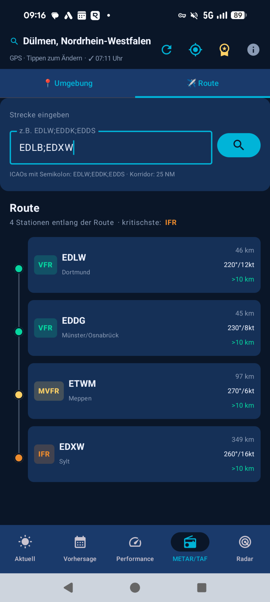
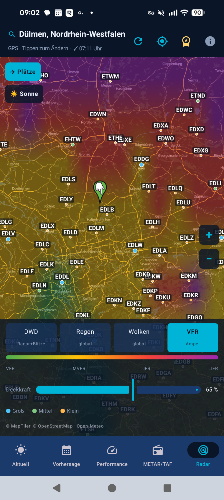
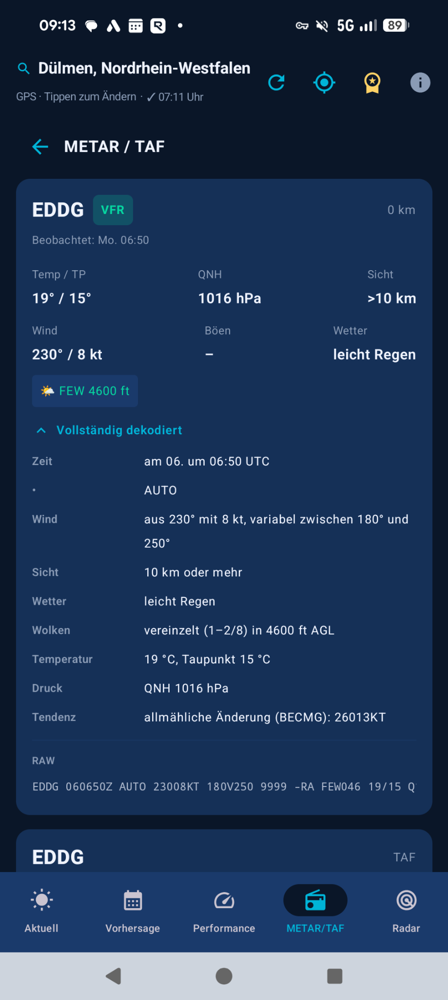
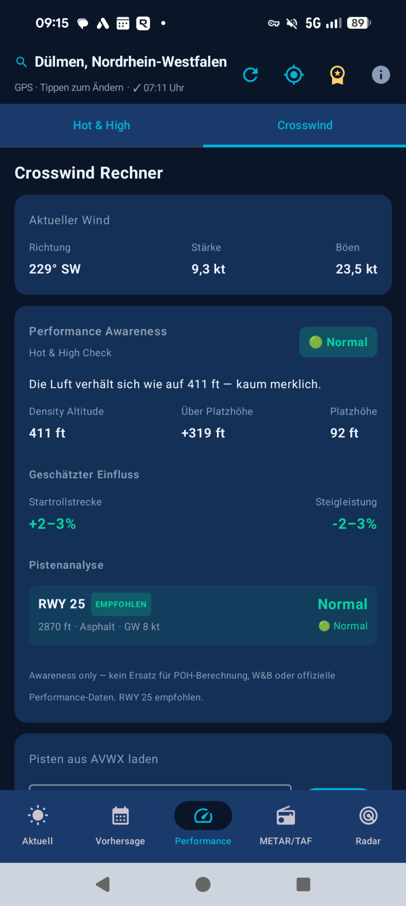

VFR Wetter bündelt aktuelle Wetterdaten, METAR/TAF, DWD-Radar, MOSMIX, Routenbewertung, Density Altitude, Crosswind und Sonnenstand zu einer klaren, nachvollziehbaren Einschätzung für deine private VFR-Flugvorbereitung.


Nicht nur Rohdaten, sondern eine nachvollziehbare Einschätzung mit Gründen, Datenlage und Trends – von der Übersicht bis zur Bahnwahl.
Flugtauglich, eingeschränkt oder nicht flugtauglich – mit priorisierten Gründen, Datenqualitäts-Score und aufklappbarer Begründung „Warum diese Einschätzung?“.
Aktuelles Wetter per GPS oder Suche nach ICAO, Name bzw. Stadt aus ~19.000 Plätzen – vollständig offline durchsuchbar.
Sicht, Bewölkung, Wind, Böen und Wettercode ergeben die Flugkategorie VFR/MVFR/IFR/LIFR auf einen Blick.
Zeigt, was sich seit dem letzten Abruf geändert hat – Kategorie, Ceiling, Sicht, Wind, Böen, neue DWD-Warnungen – mit Gesamtfazit besser/schlechter.
Ampel-Kurzhorizont am Standort für jetzt, +1, +2 und +3 Stunden inklusive Hauptgrund je Stunde.
Gespeicherte Flugplätze mit Live-Flugkategorie direkt im Suchdialog – ideal für Stammplätze und Streckenplanung.
Alle Gruppen – Wind inkl. Böen, Sicht, RVR, Wetter, Wolken, QNH, Tendenz – in verständlichem Klartext.
Stationen entlang der Strecke als vertikale Timeline mit Flugkategorie-Farbe, die kritischste Station hervorgehoben und antippbar.
Für VFR-Plätze ohne eigenes METAR wird automatisch eine nahe Station gesucht und transparent als Zusatzquelle gekennzeichnet.
Liefert AVWX keine Daten, springt AviationWeather.gov als weltweiter METAR-/TAF-Fallback ein.
Density Altitude, Pressure Altitude, ISA-Abweichung und Luftfeuchte für realistische Start- und Steigleistung.
Wolkenbasis, Gefriergrenze sowie Hinweise zu Thermik, Turbulenz und Windshear – dort eingerechnet, wo sie wirklich limitieren.
Günstigste Bahnrichtung nach Headwind, dazu Crosswind- und Rückenwind-Bewertung direkt in der Hauptempfehlung.
Höhe, Azimut/Kompass und Phase (Tag/Goldene Stunde/Dämmerung) in der Übersicht – im Performance-Tab zusätzlich Gegenlicht-Warnung je Bahnrichtung.
DWD Radar + Blitze, OpenWeatherMap-Regen, ein selbst gerendertes Open-Meteo-Wolkenfeld (tief/mittel/hoch) und eine VFR-Ampel-Heatmap – mit Deckkraft und Legende.
~19.000 weltweite ICAO-Plätze als Punkte nach Typ mit Label, antippbar zur Auswahl, ein- und ausblendbar.
Go/No-Go-Einschätzung für den Tag sowie Stundenverlauf aus Open-Meteo-Daten.
Aktualisiert den gewählten Platz bzw. GPS-Standort auf Knopfdruck – ohne erneute Suche.
Zuletzt geladene Daten bleiben lokal verfügbar; bei Daten älter als 60 Minuten warnt die App sichtbar.
Schnellübersicht direkt auf dem Homescreen mit manueller Aktualisierung.
Klarer Hinweis bei jedem App-Start: die App ist ein Hilfsmittel, kein Ersatz für die amtliche Flugwetterberatung.
Die App zeigt nicht nur ein Ampel-Symbol, sondern erklärt, worauf es basiert.
Bewertet werden unter anderem Sicht, Wind, Böen, Niederschlag, Gewitter-/Thermikrisiko, DWD-Warnungen und die Wolkensituation. Ist ein ICAO-Flugplatz gewählt, fließt zuerst dessen METAR ein: IFR/LIFR erzwingt „Nicht flugtauglich“, MVFR stuft mindestens auf „Eingeschränkt“ ab.
TAF wird für die nächsten 6 Stunden geprüft, DWD MOSMIX zusätzlich als harte Vorhersagequelle. DWD-Radar liefert die aktuelle Niederschlagsrate am Standort – ab 2,5 mm/h „Eingeschränkt“, ab 7,5 mm/h „Nicht flugtauglich“.
Für den gewählten Flugplatz werden Runways geladen und die günstigste Bahn nach Headwind bewertet: Crosswind > 15 kt oder Rückenwind > 3 kt führt mindestens zu „Eingeschränkt“, ab 20 kt bzw. 7 kt zu „Nicht flugtauglich“.
Statt „fehlendes METAR“ als Fehler zu werten, zeigt die App ehrlich, worauf die Einschätzung beruht: Mehrere Quellen abgeglichen, Platznahe Zusatzdaten oder OWM + Open-Meteo, wenn im 25-km-Umfeld keine Station verfügbar ist.
Ein schneller Eindruck der App: Bewertung, Route, Radar, METAR-Dekoder und Performance.




VFR Wetter kombiniert etablierte Wetter-, Luftfahrt- und Kartendienste zu einer gemeinsamen Einschätzung.
Nein. Die App ist ein ergänzendes Hilfsmittel zur privaten Flugvorbereitung. Sie ersetzt keine amtliche Flugwetterberatung, keine NOTAM-/AIP-Prüfung, keine POH-Berechnung und keine Entscheidung des verantwortlichen Luftfahrzeugführers.
Zuletzt geladene Wetterdaten werden lokal zwischengespeichert und bleiben offline sichtbar. Sind die Daten älter als 60 Minuten, weist die App das deutlich aus. Die Flugplatzsuche mit ~19.000 Plätzen funktioniert vollständig offline.
Die App sucht automatisch eine nahe METAR-Station. Bis 10 km fließt sie als platznahe Zusatzquelle ein, zwischen 10 und 25 km nur vorsichtig als Trendhinweis. Ohne passende Station basiert die Einschätzung transparent auf Modellwetter (Open-Meteo/OWM), DWD und ggf. MOSMIX.
VFR Wetter ist eine native Android-App, gebaut mit Kotlin und Jetpack Compose, inklusive Homescreen-Widget.
Die App ist ein ergänzendes Hilfsmittel zur privaten VFR-Flugvorbereitung. Sie ersetzt keine amtliche Flugwetterberatung, keine NOTAM-/AIP-Prüfung, keine POH-Berechnung und keine Entscheidung des verantwortlichen Luftfahrzeugführers.